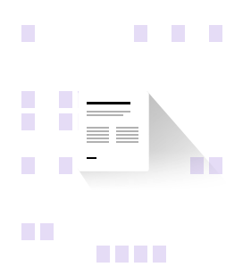

Built on the secure and stable Microsoft Azure cloud infrastructure. With the support of multiple high-security Microsoft Azure datacentres, Scan+Process assures users of round-the-clock security and reliability, in any time zone, anywhere the world. The data that passes through our servers uses AES-256 encryption, and all data communication via Scan+Process is also encrypted with HTTPS protection – assuring optimum security, from start to end.
Zero installation of server-side processes. All server-side processes, including document Classification, Extraction, and Automated Quality Control, are operated off our Microsoft Azure-supported cloud infrastructure, so there is no installation, maintenance, or support staff required to manage these processes.
Completely web-based, for fast deployment. Scan+Process ensures quick and easy deployment to any location in the world. It also uses less space on computers than a locally-installed client, without compromising on speed and stability.
